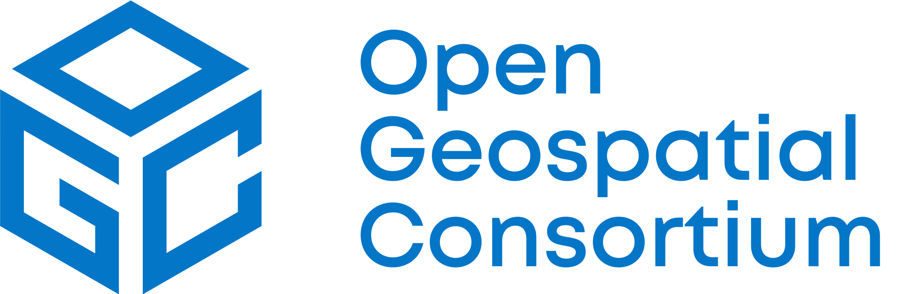
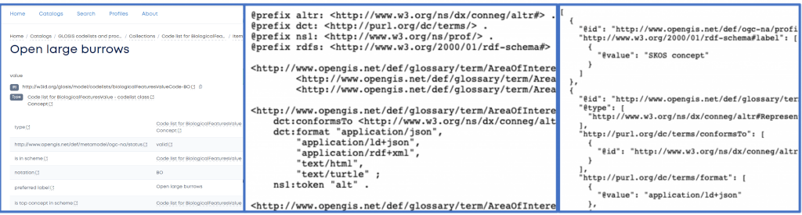
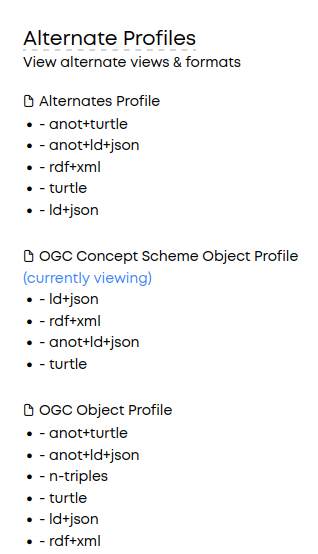

OGC RAINBOW (formerly OGC Definitions Server)The OGC Registry for Accessible Identifiers of Names and Basic Ontologies for the Web (RAINBOW) is a Web accessible source of information about things (“Concepts”) the OGC defines or that communities ask the OGC to host on their behalf. It applies FAIR principles to the key concepts that underpin interoperability in systems using OGC specifications.
OGC RAINBOW is intended to be a node in an interoperable ecosystem of resources published by different communities.
The “core” OGC RAINBOW can be accessed at https://www.opengis.net/def and holds definitions for terms defined by OGC processes, along with a range of “metamodel” resources we use to describe and interconnect these resources. There are a number of different types of resource (all linked together to support the Findable principle). As these resource types mature more user friendly entry points will be provided.
The OGC also hosts additional nodes for community content and specification development purposes.
These are the set of nodes planned to come online shortly:
In addition, OGC manages a dev environment to test new functionality.
This is all supported by a modular containerised open source deployment toolkit, allowing others to replicate such nodes.
The things hosted by Definition Server nodes can be anything that is important in the course of interoperability around spatial information where the OGC plays a role in facilitating common understanding – either through publishing specifications or assisting communities to share related concepts. OGC uses stable web addresses (URIs) to unambiguously identify concepts in its specifications. RAINBOW makes those URIs “work” – i.e. makes them dereference to a definition that can be used.
Examples include the OGC glossary, terms from GeoSPARQL, technical terms from application schemas such as the HY_Features schema from the Hydrology Domain Working Group, and many others.
The participation of OGC in the European Union’s Horizon 2020 research and innovation programme projects DataBio (Grant Agreement No 732064), NextGEOSS (Grant Agreement No 730329), CYBELE (Grant Agreement No 825355), ILIAD (Grant agreement No 101037643), and DEMETER (Grant agreement No 857202) has contributed to the development of The OGC RAINBOW, ensuring that these and future projects can benefit from a free and sustainable service.
Terminology here is important and carefully specified because different types of things behave differently!
Concept, ConceptScheme, and Collections are defined by the Simple Knowledge Organization System (SKOS) (see below).
The RAINBOW has a complete set of terms that have been defined by OGC since the inception of the OGC Naming Authority – which aims to keep all such URL references consistent.
Efforts are underway to improve the scope and detail of information available about each term – in particular cross references between specification documents and related Concepts.
The access API implements the draft W3C Recommendation for “Content Negotiation by Profile”.
RAINBOW is implemented using Linked Data principles – so the combination of stable URIs allowing references to be made from outside, and “follow your nose” navigation via links from one term to related terms provides enhanced findability.
Currently a limited search capability over Concept definitions is provided, however the contents are indexable by external search engines.
RAINBOW does not make any assumptions about the client software that may be used now or in the future to access definitions, other than the use of HTTP protocols. This enhances accessibility for different environments.
The “Web-friendly” way of using an identifier (i.e. a URL) to get more information is augmented by “content negotiation” – RAINBOW can deliver both user-friendly Web pages and other forms of resource representations, e.g. JSON-LD or Turtle (TTL).
Figure 1 shows different views of the Concept of an Area of Interest. The left panel shows an HTML representation, the middle shows the same information using TTL, and the right using JSON. All three representations have the same content, but differ in its serialization/format. This allows both human users to explore the OGC Definition Server, as well as machines to process its content.

The interoperability of these term URI behaviours and the resources they provide access to is a key goal. There are several aspects of this handled using different mechanisms:
The identifiers mentioned above, i.e. the URLs that can deliver content (in this case details of definitions) to the user, are termed Concepts and are organized into ConceptSchemes – and Collections.
NB: richer data models such as UML and OWL may provide the authoritative source of definitions, however these can all be mapped to the simplified Concept model to support common approaches to discovering these many and varied authoritative sources.
Concept, ConceptScheme, and Collections are defined by the Simple Knowledge Organization System (SKOS). SKOS is a W3C recommendation and widely used as a standard data model for sharing and linking knowledge organization systems via the Web.
So why SKOS? Many knowledge organization systems, such as thesauri, taxonomies, classification schemes, and subject heading systems, share similar structure, and are used in similar applications. Even though they might even share exact semantics, you need to learn that by explicitly discovering, accessing, and evaluating the content. Without a standardized interface, this endeavor is labor-intensive and can hardly be executed by machines.
SKOS captures much of this similarity and makes it explicit. It enables data and technology sharing across diverse applications by providing a lightweight, intuitive language for developing and sharing knowledge. In most cases, existing knowledge can be transformed into SKOS, because the SKOS data model provides a standard, low-cost migration path for porting existing knowledge organization systems.
RAINBOW currently offers a range of encodings for all terms:
Use of JSON-LD is suggested for most applications because it is simply JSON with extra annotations to turn relevant element names and values into unambiguous URIs. It’s an encoding of RDF, but easily parsed by browsers.
Where applicable, certain types of resources are also available in the original or additional formats. For example, Application Schemas will be made available as XML schema (XSD) and UML (XMI) forms.
The RAINBOW maximizes interoperability through its use of HTTP to access resources.
Flexibility is managed through three key mechanisms based on W3C recommendations:
NB: CNAP is a recommendation undergoing final steps towards Recommendation at W3C with input from OGC RAINBOW design.
As needs are identified, new profiles can be specified and arbitrary “graphs” created by custom API endpoints to deliver different views of the available semantic resources. Interoperability is supported by publishing these profiles as definition resources for reuse.
The OGC Naming Authority manages RAINBOW to ensure all term URIs are stable with transparent governance. These identifiers can thus be safely used in external context. All content is freely available for reuse. Reuse is envisaged largely through the machine-readable versions.
Note that documentation with appropriate licences will be retrofitted to this content – however its safe to assume that an appropriate licence is granted to re-use with attribution and without modification.
RAINBOW can be accessed at https://www.opengis.net/def.
Accessing definitions by following (i.e. “dereferencing”) OGC published URIs is supported.
The server will respond with an HTTP 303 URI redirect to the current service interface appropriate to the requested profile (view) and format.
http://www.opengis.net/def/docs/03-003r10http://defs.opengis.net/vocprez/object?uri=http://www.opengis.net/def/do…
⇓
HTTP 303
Location:
(this redirect is necessary for several reasones, such as the actual target resource URL may change as we improve the interface options for specific types of content, but the original URI will always work)
Every Concept belongs to a ConceptScheme that will usually be
identified by
the base part of the URI path:http://www.opengis.net/def/docs/03-003r10 skos:inScheme
http://www.opengis.net/def/docs
Each ConceptScheme will have a “top level” Collection that contains
a list
of
members (which may be a flat list or a list of sub-Collections). By default this will have a URI
based on
adding
a “/” to the ConceptScheme URI. This is also made explicit in the data to allow
link
following:http://www.opengis.net/def/docs
policy:collectionView http://www.opengis.net/def/docs/
NB: many systems conflate URL paths with and without trailing “/” to be the same thing – but this potentially leads to ambiguity and typically needs other non-standard mechanisms to access metadata about a collection.
Concepts may also be organised in a hierarchical “taxonomy” via a non-overlapping set of broader/narrower relationships, with the top of each hierarchy linked via skos:hasTopConcept from the parent ConceptScheme.
This supports the following capabilities:
A basic search capability over Concept definitions is provided via the underlying interface
e.g.http://defs.opengis.net/vocprez/search?search=Catchment&from=all
Every term includes a list of available formats for both the individual term and the collection or package that defines it:

The original sources can be downloaded from the OGC Naming Authority GitHub repository at https://github.com/opengeospatial/NamingAuthority
OGC RAINBOW is managed by the OGC Naming Authority. Contact OGC here.
Feedback is welcome on how to improve any aspect of the OGC RAINBOW.
If you intend to integrate or replicate aspects of the service please drop us a line so we can ensure future changes do not negatively impact you.
The User Interface (HTML) views are largely “out-of-the-box”, and suggestions for improvement are welcome but may not be prioritized over content improvement and machine-readable options.
If RAINBOW is potentially able to solve a problem for a community, then it can be readily extended in various ways. In general, requests should be done through an existing OGC process, such as a Working Group, however technical feedback or requests to explore the feasibility of extended functionality can be made via the issues tracker here